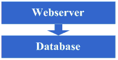
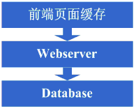
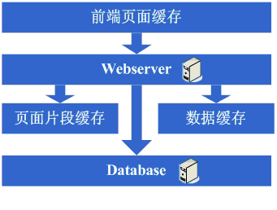
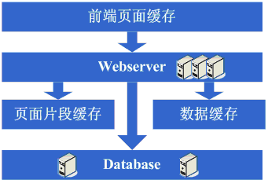
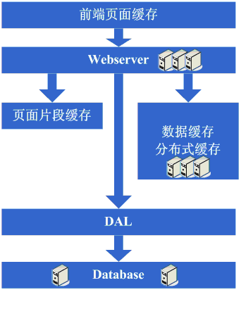

これまでにも大規模Webサイトのアーキテクチャ進化を紹介する記事はいくつかあり、例えばLiveJournalやeBayのものは非常に参考になる。しかし、それらは毎回の進化の結果を中心に述べており、なぜそのような進化が必要なのかを詳しく説明していないと感じた。また、最近では多くの人がなぜWebサイトにそれほど複雑な技術が必要なのかを理解しづらいと感じていることもあり、この記事を書こうと思った。この記事では、普通のWebサイトが大規模Webサイトに発展していく過程における、比較的典型的なアーキテクチャ進化の道のりと、習得すべき知識体系について述べる。インターネット業界を志す人々に初歩的な概念を提供できればと思う。記事の誤りについてもぜひ意見をいただければ、この記事が本当に「抛砖引玉」（ささやかなきっかけとなってより良い意見を引き出す）の役割を果たせるようにしたい。
アーキテクチャ進化の第一歩：Webサーバーとデータベースの物理的分離
最初は、何かのアイデアがあってインターネット上にWebサイトを構築した。この時点ではホストすらレンタルかもしれない。しかしこの記事ではアーキテクチャの進化にのみ焦点を当てるため、すでに1台のホストを運用し、一定の帯域幅があると仮定する。この時点でWebサイトには一定の特色があり、一部の人がアクセスするようになった。次第にシステムの負荷が高まり、応答速度が遅くなっていくことに気づく。そしてこの時期に顕著なのは、データベースとアプリケーションが互いに影響し合うことである。アプリケーションに問題が発生するとデータベースも問題を起こしやすく、データベースに問題が発生するとアプリケーションも問題を起こしやすい。そこで第一段階の進化に入る。アプリケーションとデータベースを物理的に分離し、2台のマシンにする。この時点で技術的に新しい要件はないが、確かに効果があることが分かる。システムは以前の応答速度に戻り、より高いトラフィックを支えられるようになり、データベースとアプリケーションが互いに影響を及ぼすこともなくなる。
このステップ完了後のシステム図を見てみましょう。

このステップで関係する知識体系は以下の通りです。
このステップのアーキテクチャ進化は、技術的な知識体系をほぼ必要としません。
アーキテクチャ進化の第二歩：ページキャッシュの追加
良い状態は長く続かず、アクセスする人が増えるにつれて、再び応答速度が遅くなっていることに気づく。原因を調べると、データベースへのアクセス操作が多すぎて、データベース接続の競争が激しくなり、応答が遅くなっていることが分かった。しかしデータベース接続をあまり多く開くわけにもいかない。そうしないとデータベースマシンの負荷が非常に高くなるからだ。そこで、キャッシュメカニズムを採用して、データベース接続リソースの競争とデータベース読み取りへの負荷を減らすことを検討する。この時点では、まずsquidなどの類似メカニズムを使って、システム内の比較的静的なページ（例えば1、2日に一度しか更新されないページ）をキャッシュするだろう（もちろん、ページを静的にする方法もある）。これにより、プログラムを変更することなく、Webサーバーへの負荷を軽減し、データベース接続リソースの競争を減らすことができる。OK、それではsquidを使って比較的静的なページのキャッシュを始める。
このステップ完了後のシステム図を見てみましょう。

このステップで関係する知識体系は以下の通りです。
フロントエンドページキャッシュ技術、例えばsquid。うまく使いたいなら、squidの実装方式やキャッシュの無効化アルゴリズムなどを深く理解する必要がある。
アーキテクチャ進化の第三歩：ページフラグメントキャッシュの追加
squidをキャッシュに追加した後、システム全体の速度は確かに向上し、Webサーバーの負荷も下がり始めた。しかしアクセス量の増加に伴い、システムが再び少し遅くなっていることに気づく。squidのような動的キャッシュの利点を体験した後、動的ページの中の比較的静的な部分もキャッシュできないかと考え始めた。そこでESIのようなページフラグメントキャッシュ戦略を採用することを検討する。OK、ではESIを使って動的ページ内の比較的静的なフラグメント部分をキャッシュすることにした。
このステップ完了後のシステム図を見てみましょう。

このステップで関係する知識体系は以下の通りです。
ページフラグメントキャッシュ技術、例えばESIなど。うまく使うには、やはりESIの実装方式などを理解する必要がある。
アーキテクチャ進化の第四歩：データキャッシュ
ESIのような技術を採用してシステムのキャッシュ効果をさらに高めた後、システムの負荷は確かにさらに低下した。しかし同様に、アクセス量の増加に伴い、システムはやはり遅くなり始めた。調査すると、システム内にユーザー情報の取得など、データ情報を重複して取得している箇所があることに気づくかもしれない。この時点で、これらのデータ情報もキャッシュできるのではないかと考え始める。そこでこれらのデータをローカルメモリにキャッシュする。変更が完了すると、期待通りにシステムの応答速度は回復し、データベースの負荷も再びかなり低下した。
このステップ完了後のシステム図を見てみましょう。

このステップで関係する知識体系は以下の通りです。
キャッシュ技術。Mapデータ構造、キャッシュアルゴリズム、選択したフレームワーク自体の実装メカニズムなどを含む。
アーキテクチャ進化の第五歩：Webサーバーの追加
良い状態は長く続かず、システムへのアクセス量が再び増加すると、Webサーバーマシンの負荷がピーク時にかなり高くなることが分かった。この時点でWebサーバーをもう1台追加することを検討し始める。これは同時に可用性の問題を解決するためでもある。単一のWebサーバーがダウンするとサービスが利用できなくなることを避けるためだ。これらの考慮を経て、Webサーバーを1台追加することを決定する。Webサーバーを1台追加する際には、いくつかの問題に直面する。典型的なものは以下の通り。
1. アクセスをどのように2台のマシンに振り分けるか。この場合、通常検討されるのはApacheに内蔵されたロードバランシング機能や、LVSなどのソフトウェア負荷分散ソリューションです。
2. ユーザーセッションなどの状態情報の同期をどのように維持するか。この場合、データベースへの書き込み、ストレージへの書き込み、Cookie、セッション情報の同期などのメカニズムが検討されます。
3. データキャッシュ情報の同期をどのように維持するか。例えば以前にキャッシュしたユーザーデータなど。この場合、通常はキャッシュ同期や分散キャッシュのメカニズムが検討されます。
4. ファイルアップロードのような機能を引き続き正常に動作させるにはどうするか。この場合、通常は共有ファイルシステムやストレージを使用するメカニズムが検討されます。
これらの問題を解決した後、ようやくWebサーバーを2台に増やし、システムは以前の速度を取り戻した。
このステップ完了後のシステム図を見てみましょう。

このステップで関係する知識体系は以下の通りです。
負荷分散技術（ハードウェア負荷分散、ソフトウェア負荷分散、負荷分散アルゴリズム、Linux転送プロトコル、選択した技術の実装詳細などを含むがこれらに限定されない）、主系/待機系技術（ARPスプーフィング、Linux HA（heart-beat）などを含むがこれらに限定されない）、状態情報またはキャッシュ同期技術（Cookie技術、UDPプロトコル、状態情報のブロードキャスト、選択したキャッシュ同期技術の実装詳細などを含むがこれらに限定されない）、共有ファイル技術（NFSなどを含むがこれらに限定されない）、ストレージ技術（ストレージデバイスなどを含むがこれらに限定されない）。
アーキテクチャ進化の第六歩：データベース分割（分庫）
システムへのアクセス量が急速に伸びる幸福な時間をしばらく楽しんだ後、システムが再び遅くなっていることに気づく。今回は一体何が起きているのか。調査すると、データベースへの書き込みや更新といった操作において、一部のデータベース接続のリソース競争が非常に激しく、システムが遅くなっていることが分かった。さて、どうすればよいのか。この時点で選択肢となるのはデータベースクラスタと分庫戦略だ。クラスタは一部のデータベースではサポートがあまり良くないため、分庫が比較的一般的な戦略となる。分庫は既存プログラムの修正を意味する。一通り修正して分庫を実現すると、うまくいき、目標を達成し、システムは回復しただけでなく、以前よりも速くなった。
このステップ完了後のシステム図を見てみましょう。

このステップで関係する知識体系は以下の通りです。
このステップは、分庫を実現するためにビジネス上の合理的な分割を行うことがより重要であり、具体的な技術詳細に関するその他の要件はありません。
しかし同時に、データ量の増大と分庫の進行に伴い、データベースの設計、チューニング、および保守をより良く行う必要がある。したがって、これらの分野の技術に対しては依然として高い要件が課される。
アーキテクチャ進化の第七歩：テーブル分割（分表）、DAL、分散キャッシュ
システムの継続的な稼働に伴い、データ量が大幅に増加し始めた。この時点で、分庫後もクエリが依然として少し遅いことに気づく。そこで分庫の考え方に従って分表の作業を始める。もちろん、これにはプログラムの修正が避けられない。この頃になると、アプリケーション自身が分庫分表のルールなどを気にする必要があり、やはり複雑だと気づくかもしれない。そこで、分庫分表に対応したデータアクセスを実現する汎用フレームワークを追加できないかという考えが湧いてくる。これはeBayのアーキテクチャではDALに相当する。この進化のプロセスは比較的長い時間がかかる。もちろん、その汎用フレームワークは分表が完了してから作り始める可能性もある。同時に、この段階で以前のキャッシュ同期方式に問題が発生することに気づくかもしれない。データ量が大きすぎるため、キャッシュをローカルに置いて同期する方式はもはや現実的ではなく、分散キャッシュ方式を採用する必要がある。そこで、またしても調査と苦労の末、大量のデータキャッシュを分散キャッシュに移行することになった。
このステップ完了後のシステム図を見てみましょう。

このステップで関係する知識体系は以下の通りです。
分表も同様にビジネス上の分割が中心です。技術的には動的ハッシュアルゴリズム、コンシステントハッシュアルゴリズムなどが関係します。
DALは比較的多くの複雑な技術に関わります。例えば、データベース接続の管理（タイムアウト、例外）、データベース操作の制御（タイムアウト、例外）、分庫分表ルールのカプセル化などです。
アーキテクチャ進化の第八歩：Webサーバーのさらなる追加
分庫分表の作業が完了した後、データベースへの負荷は比較的低くなり、再び毎日アクセス量の急増を見ながら幸せな日々を過ごしていた。ところがある日突然、システムへのアクセスが再び遅くなる傾向があることに気づく。まずデータベースを確認すると、負荷はすべて正常である。次にWebサーバーを確認すると、Apacheが多くのリクエストをブロックしており、アプリケーションサーバーは各リクエストに対して比較的高速であることが分かった。どうやらリクエスト数が多すぎて、待ち行列が発生し、応答速度が遅くなっているようだ。これはまだ対処しやすい。一般的に、この頃にはある程度の資金もあるので、Webサーバーを追加することにする。このWebサーバー追加のプロセスでは、いくつかの課題が発生する可能性がある。
1、Apacheのソフトウェア負荷分散やLVSソフトウェア負荷分散などは、巨大なWebアクセス量（リクエスト接続数、ネットワークトラフィックなど）のスケジューリングを処理できなくなった。このとき、予算が許せば、ハードウェア負荷分散装置（F5、Netsclar、Athelonなど）を購入するという解決策を取る。予算が許さなければ、アプリケーションを論理的に分類し、異なるソフトウェア負荷分散クラスタに分散させるという解決策を取る；
2、従来の状態情報同期やファイル共有などのソリューションにボトルネックが生じる可能性があり、改善が必要になる。このとき、状況に応じてWebサイトの業務ニーズに合った分散ファイルシステムなどを開発するかもしれない；
これらの作業を完了した後、一見完璧な無限スケーラビリティの時代に入り始める。Webサイトのトラフィックが増加したとき、対応する解決策はWebサーバーを絶えず追加することである。
このステップ完了後のシステムの図を見てみよう：

このステップには、以下の知識体系が関わっている：
このステップに達すると、マシン数の継続的な増加、データ量の継続的な増加、システム可用性への要求の高まりに伴い、採用している技術に対してより深い理解が求められ、Webサイトのニーズに応じて、よりカスタマイズ性の高い製品を作る必要がある。
アーキテクチャ進化の第九歩：データ読み書き分離と低コストストレージソリューション
突然ある日、この完璧な時代も終わりを迎えることに気づく。データベースの悪夢が再び目の前に現れた。Webサーバーを追加しすぎたため、データベース接続リソースが依然として不足している。そしてこの時点ではすでに分庫分表（データベースとテーブルの分割）が行われている。データベースの負荷状況を分析し始めると、データベースの読み書き比率が非常に高いことに気づくかもしれない。このような場合、通常はデータ読み書き分離のソリューションを思いつく。もちろん、このソリューションの実装は容易ではない。また、一部のデータをデータベースに保存するのはやや無駄である、あるいはデータベースリソースを過度に占有していることに気づくかもしれない。したがって、この段階で形成される可能性のあるアーキテクチャ進化は、データ読み書き分離を実現し、同時にBigTableのようなより低コストなストレージソリューションを開発することである。
このステップ完了後のシステムの図を見てみよう：

このステップには、以下の知識体系が関わっている：
データ読み書き分離には、データベースのレプリケーションやスタンバイなどの戦略に対する深い習得と理解が求められ、同時に自ら実装する技術を持つことが要求される；
低コストストレージソリューションには、OSのファイルストレージに対する深い習得と理解が求められ、同時に採用した言語のファイル分野における実装についても深い習得が要求される。
アーキテクチャ進化の第十歩：大規模分散アプリケーション時代と低コストサーバー群の夢の時代へ
上記の長く苦しいプロセスを経て、ついに再び完璧な時代を迎えた。Webサーバーを増やし続けるだけで、ますます高まるアクセス量を支えられるようになった。大規模Webサイトにとって、人気の重要性は言うまでもない。人気が高まるにつれ、さまざまな機能要件も爆発的に増加し始めた。このとき、元々WebサーバーにデプロイされていたWebアプリケーションが非常に巨大になっていることに突然気づく。複数のチームがそれを変更し始めると、実に不便であり、再利用性も非常に悪い。基本的に、各チームが多かれ少なかれ重複した作業を行っている。また、デプロイとメンテナンスもかなり面倒である。巨大なアプリケーションパッケージをN台のマシンにコピーして起動するだけでも、かなりの時間がかかる。問題が発生したときも調査しにくい。さらに悪い状況として、あるアプリケーションのバグが原因でサイト全体が利用不能になる可能性が非常に高いことや、チューニングが行いにくい（マシンにデプロイされたアプリケーションが何でも行うため、的を絞ったチューニングがまったくできない）などの要因もある。このような分析に基づき、思い切ってシステムを責務ごとに分割することを決意し、こうして大規模な分散アプリケーションが誕生した。通常、このステップはかなり長い時間を要する。多くの課題に直面するからである：
1、分散化した後、高性能で安定した通信フレームワークを提供する必要があり、異なるさまざまな通信方式やリモート呼び出し方式をサポートする必要がある；
2、巨大なアプリケーションの分割には長い時間がかかり、業務の整理やシステム依存関係の制御などを行う必要がある；
3、この巨大な分散アプリケーションをどのように運用保守（依存関係管理、稼働状況管理、エラートラッキング、チューニング、監視、アラートなど）するか。
このステップを経ると、システムのアーキテクチャはほぼ比較的安定した段階に入る。同時に、大量の低コストマシンを採用して巨大なアクセス量とデータ量を支えることができるようになる。このアーキテクチャと、これまでの数多くの進化のプロセスで得た経験を組み合わせ、他のさまざまな方法を採用して、ますます高まるアクセス量を支えていく。
このステップ完了後のシステムの図を見てみよう：

このステップには、以下の知識体系が関わっている：
このステップに関わる知識体系は非常に多く、通信、リモート呼び出し、メッセージメカニズムなどに対する深い理解と習得が求められる。求められるのは、理論、ハードウェアレベル、オペレーティングシステムレベル、そして採用した言語の実装について明確に理解していることである。
運用保守の分野に関わる知識体系も非常に多い。ほとんどの場合、分散並列計算、レポート、監視技術、ルールやポリシーなどを習得する必要がある。
言うのは確かにそれほど大変ではない。Webサイトアーキテクチャの古典的な進化プロセスは、上記と比較的似ている。もちろん、各ステップで取るソリューションや進化のステップは異なる場合がある。また、Webサイトの業務が異なるため、専門技術のニーズも異なる。このブログはどちらかと言うと、アーキテクチャの観点から進化のプロセスを解説している。もちろん、ここで言及していない技術も多くある。データベースクラスタ、データマイニング、検索などだ。しかし実際の進化のプロセスでは、ハードウェア構成の向上、ネットワーク環境の改善、オペレーティングシステムの改造、CDNミラーリングなどを活用して、より大きなトラフィックを支えることもある。したがって、実際の発展プロセスには多くの違いがある。また、大規模Webサイトが実現すべきことは上記だけに留まらない。セキュリティ、運用保守、運営、サービス、ストレージなどもある。大規模なWebサイトをしっかり作り上げることは本当に容易ではない。この記事を書いたのは、より多くの大規模Webサイトアーキテクチャの進化に関する紹介を引き出したいという思いからである。
元の記事のアドレス：http://www.blogjava.net/BlueDavy/archive/2008/09/03/226749.html
クリックしてノートを共有
<p style="font-size:14px;">ノートは本記事の内容の拡張である必要があります！</p><br> <p style="font-size:12px;"><a href="../tougao.html" target="_blank">記事投稿は、ここをクリック</a></p> <p style="font-size:14px;"><a href="./runoob-user-test-intro.html" target="_blank">登録招待コードの取得方法</a></p> <h3 class="text-muted"><i class="fa fa-info-circle" aria-hidden="true"></i> ノートを共有する前に<a href=".." class="runoob-pop">ログイン</a>が必要です！</h3> <p><a href="./runoob-user-test-intro.html" target="_blank">登録招待コードの取得方法</a></p>